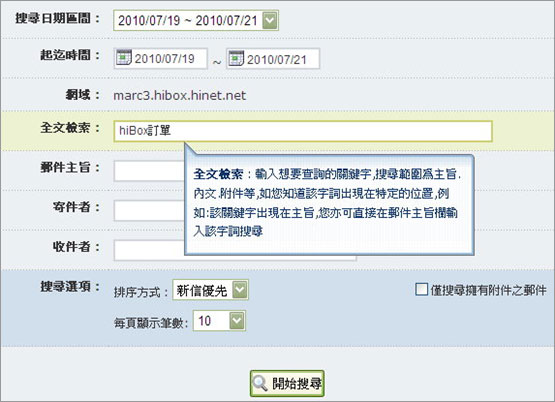
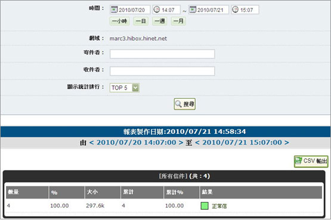
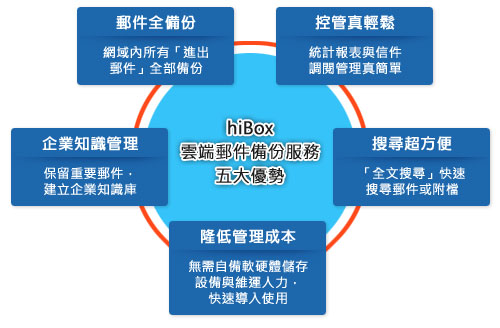

hiBox雲端郵件備份服務
適用客戶：
希望有效控管備份郵件且不想自備儲存設備的企業
服務說明：
hiBox系統將同網域「進（來信）、出（發信）」郵件設定自動備份於專屬的備份儲存空間，協助企業快速備份、搜尋與管理重要郵件，輕鬆建立企業知識寶庫。
功能說明：
1. 提供管理者介面。
2. 提供即時性的信件查詢功能。可針對備份郵件進行全文檢索、附檔檢索(含壓縮檔)。

3. 提供報表查詢與統計功能。

雲端郵件備份服務與即時備份信箱 比一比
備份種類
即時備份信箱 (標準型)
雲端郵件備份服務 (專業型)
適用客戶
郵件查詢頻率低與喜好功能簡化的1~5人微型企業
希望有效控管備份郵件且不想自備儲存設備的企業
服務說明
企業專屬的郵件備份信箱。
hiBox系統將同一網域「進(來信)、出(發信)」郵件設定自動備份於專屬的備份信箱，協助企業留存重要郵件及建立知識管理機制。
企業專屬的郵件備份網路儲存空間。
hiBox系統將同網域「進來信)、出(發信)」郵件設定自動備份於專屬的備份儲存空間，協助企業快速備份、搜尋與管理重要郵件，輕鬆建立企業知識寶庫。
功能說明
1. 無管理者介面。
2. 提供信箱基本查詢功能。
1. 提供管理者介面。
2. 提供即時性的信件查詢功能。可針對備份郵件進行全文檢索、附檔檢索(含壓縮檔)。
3. 提供報表查詢與統計功能。
基本容量
500MB的信箱容量/空間
10G的網路儲存空間
費率說明
400元/月 (後續容量升級每1G增加600元)
600元/月 (後續容量升級每5G增加200元)
hiBox雲端郵件備份服務的優勢

hiBox雲端郵件備份服務費率
項 目
基本容量
費 率
雲端郵件備份服務(專業型)
10G
每月600元，每增加5G空間，每月加收200元
註：hiBox全能信箱暨所有加值服務費率，請參考「
產品費率
」。